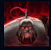
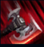
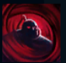
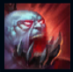
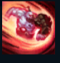

Sion
| Sion The Undead Juggernaut | |
|---|---|
| Release date | 21.04.2009 |
| Class | Vanguard |
| Positions | Top |
| Resource | Mana |
| Range type | Melee |
| Adaptive type | Physical |
| Base statistics | |||
| Health | 545 – 1786 | Mana | 330-1044 |
| Health regen. | 7 – 19.75 |
Mana regen. | 7.5-16.85 |
| Armor | 38 – 70 | Attack damage | 52 – 99.6 |
| Magic resist. | 30 – 38.5 | Crit. damage | 175% |
| Move. speed | 345 | Attack range | 175 |
Sion, un erou dintr-o eră demult apusă, a câștigat respectul noxienilor după ce a sugrumat un rege demacian cu mâinile goale. Când să aibă parte de odihna veșnică, a fost readus la viață pentru a-și servi imperiul chiar și după moarte. A început să-i ucidă pe toți cei care-i stăteau în cale, indiferent din ce tabără făceau parte, dovedind că își pierduse complet umanitatea. Acum, cu carnea putrezindă apărată de-o armură grosolană, Sion continuă să se arunce în luptă cu o degajare necugetată, încercând între lovituri de topor să-și amintească cine e cu adevărat. |  |
GLORIE PRIN MOARTE După ce este ucis, Sion este reanimat temporar, dar viața lui se degradează rapid. Atacurile sale sunt foarte rapide, îl vindecă și provoacă daune bonus în funcție de viața maximă a țintei. |
||
|---|---|---|---|---|
 |
LOVITURĂ DEVASTATOARE Sion pregătește o lovitură puternică într-o zonă din fața lui, provocându-le daune inamicilor atunci când o execută. Dacă o încarcă suficient de mult timp, inamicii loviți vor fi aruncați în sus și amețiți. |
|||
 |
VATRA SUFLETULUI Sion câștigă un scut și poate reactiva abilitatea după 3 secunde pentru a le provoca daune magice inamicilor din apropiere. Atunci când Sion ucide inamici, câștigă pasiv viață maximă. |
|||
|  |
RĂGETUL UCIGAȘULUI Sion lansează o undă de șoc pe rază scurtă, care provoacă daune, încetinește și reduce armura primului inamic lovit. Dacă unda de șoc lovește un minion sau un monstru, acesta va fi aruncat înapoi, provocându-le daune tuturor inamicilor prin care trece, încetinindu-i și reducându-le armura. |
|||
 |
MĂCEL NESTĂVILIT Sion pornește la atac într-o direcție, câștigând din ce în ce mai multă viteză în timp. El poate modifica ușor direcția atacului folosind cursorul mouse-ului. Când se lovește de un inamic, provoacă daune și îl aruncă în sus, în funcție de distanța parcursă. |